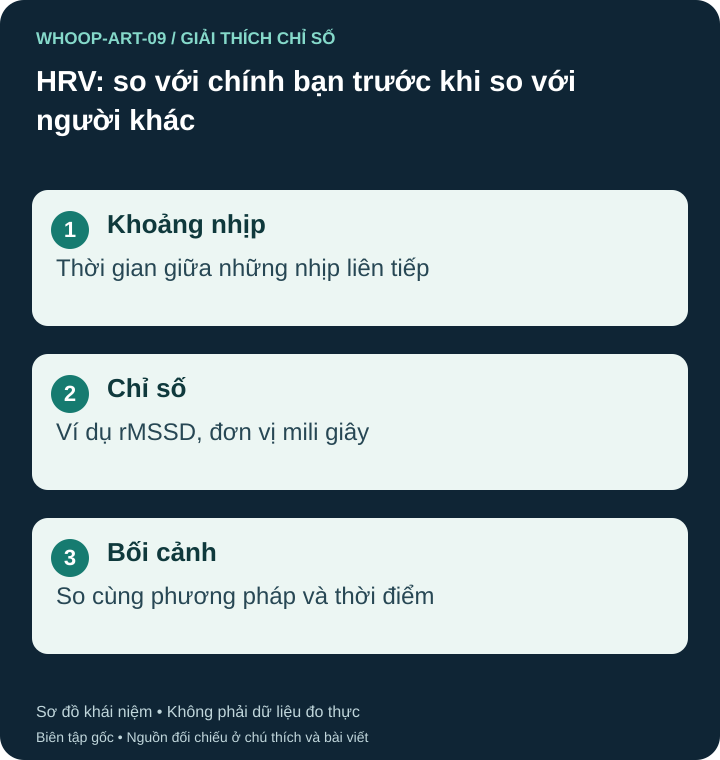

Nhịp tim và HRV khác nhau
Nhịp tim là số lần tim đập trong một phút. HRV mô tả biến thiên khoảng thời gian giữa các nhịp; tim 60 lần/phút không bắt buộc các nhịp cách nhau đúng một giây. Nhiều phép tính HRV tồn tại, trong đó rMSSD và SDNN không thể thay thế nhau chỉ vì đều có đơn vị mili giây. S14

WHOOP lấy dữ liệu nào?
WHOOP theo dõi HRV liên quan dữ liệu ngủ để hỗ trợ Recovery. Tài liệu hỗ trợ mới mô tả trung bình có trọng số qua đêm, không đơn giản là một mẫu cố định duy nhất trong ngủ sâu. Giá trị có thể khác phép đo ban ngày hoặc thiết bị dùng cửa sổ và cách tính khác. S12
Thấp hơn người khác không tự có nghĩa kém khỏe
Tuổi, sinh lý cá nhân, bối cảnh đo và nhiều yếu tố khác ảnh hưởng HRV. Một số của bạn bè không phải mục tiêu bắt buộc của bạn. Cách diễn giải thực tế hơn là so với lịch sử của chính mình trong điều kiện tương đối nhất quán, đồng thời xem RHR, ngủ, tải và cảm nhận. S13 S14
Ví dụ, một buổi sáng HRV giảm sau đêm ngắn là tín hiệu để nhìn lại bối cảnh, không đủ chẩn đoán quá tải. HRV rất cao bất thường cũng không luôn có nghĩa phục hồi tốt; nhiễu hoặc nhịp bất thường có thể làm các khoảng nhịp biến thiên.
Hãy kiểm tra chất lượng dữ liệu khi xuất hiện bước nhảy lớn. Nếu kèm hồi hộp, choáng hoặc triệu chứng mới, trao đổi với nhân viên y tế. Không cố nâng HRV bằng cách đổi thuốc hay thay lịch tập cực đoan chỉ để đạt một số đẹp.
Nguồn tham khảo và phạm vi hỗ trợ
- S13 — WHOOP. Heart Rate Variability: What It Means for Fitness and Health. Phạm vi: HRV theo cá nhân; không chuyển các tuyên bố độ chính xác quảng bá thành độ chính xác lâm sàng phổ quát.
- S14 — Task Force of the ESC and NASPE. Circulation. 1996;93(5):1043–1065.. Heart rate variability: standards of measurement, physiological interpretation and clinical use. PMID 8598068. Phạm vi: Định nghĩa HRV, rMSSD, SDNN, điều kiện đo và giới hạn so sánh.
- S12 — WHOOP Support. WHOOP Recovery. Phạm vi: Mô tả Recovery mới; HRV lấy trung bình có trọng số qua đêm; Sleep Performance có bốn thành phần.
Bài biên soạn độc lập bởi Pulse & Vitality; tài liệu WHOOP và các nguồn khác được dùng để tham khảo. Đăng ngày 2026-10-27; nguồn đối chiếu 2026-10-26. Nội dung giáo dục, không thay thế đánh giá, chẩn đoán hoặc điều trị y tế.